OpenCV
简介 ʕ •̀ ω •́ ʔ✧
OpenCV的全称是Open Source Computer Vision Library，是一个跨平台的计算机视觉库。OpenCV是由英特尔公司发起并参与开发，以BSD许可证授权发行，可以在商业和研究领域中免费使用。
官方网站:https://opencv.org/
OpenCV拓展库：https://github.com/opencv/opencv_contrib
Visual Studio Community | Visual Studio Code下载地址
注：GitHub下载速度慢，使用Gitee进行下载
Cmake安装 (๑ ◔ ‿ ◔ ๑)
cmake官网：https://cmake.org/
cmake镜像网站：https://cmake.org/files/
提示：Cmake版本不要下载太高，可能会出现问题。尽量安装3.26以下
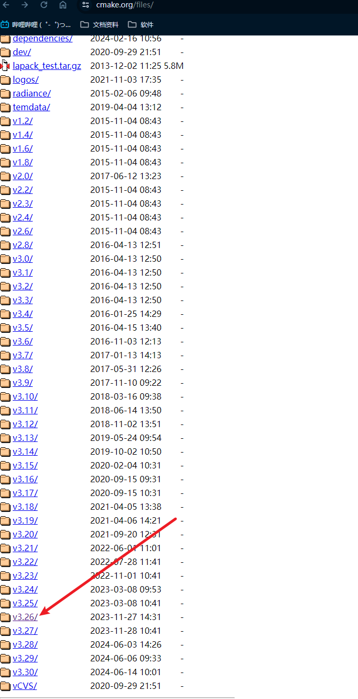
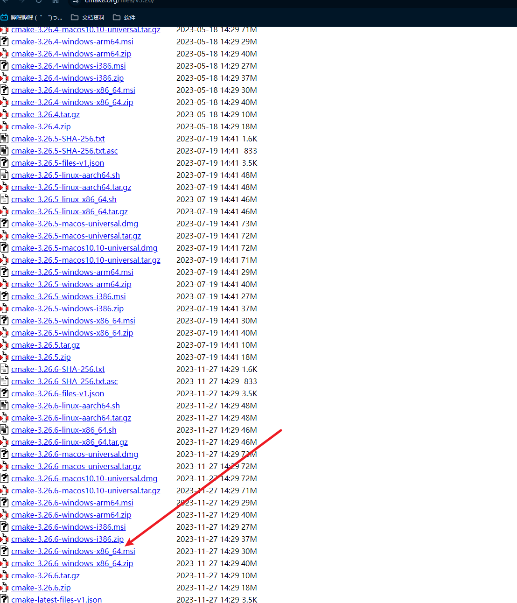
Windows的安装包为：msi 后缀
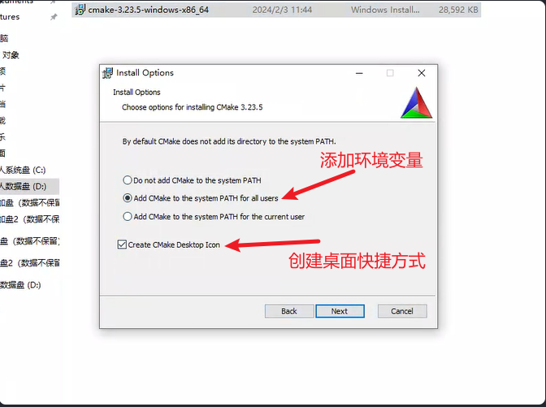
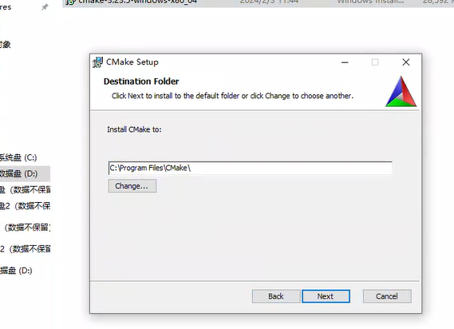
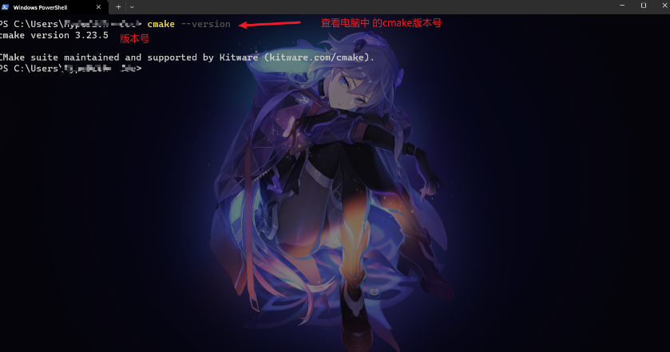
如果在安装时忘记添加环境变量
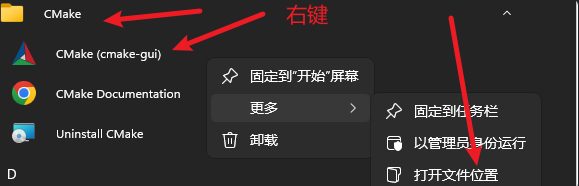
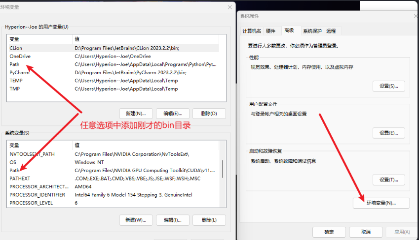
目录长这样：D:\Program Files\CMake\bin
安装配置OpenCV库 < (￣ ︶ ￣) ↗[GO!]
Windows
官方的预编译库
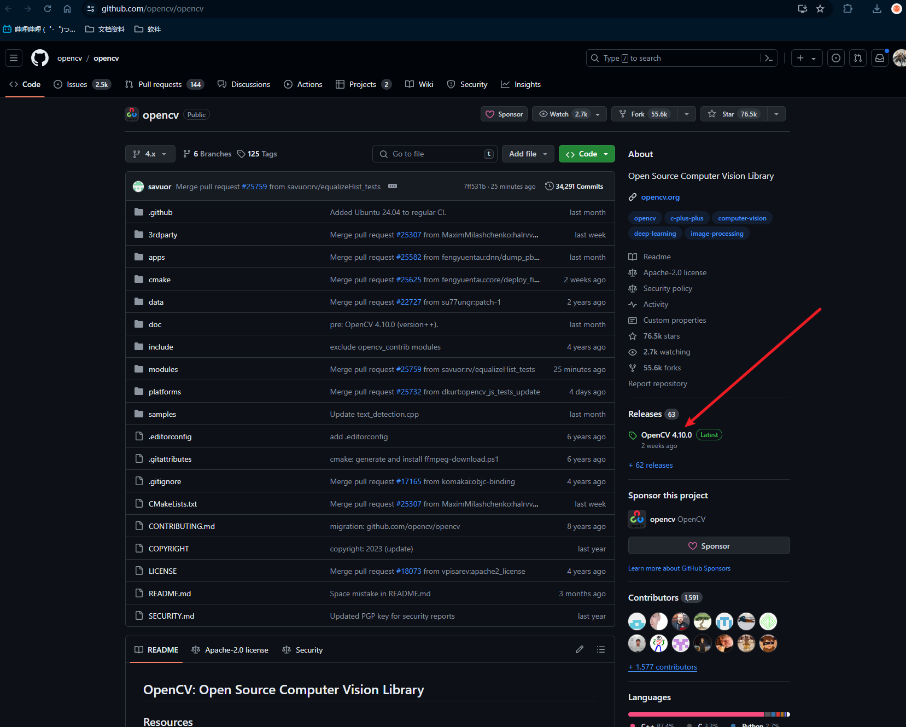
下载 exe后缀的文件，类似为 opencv-xxx-windows.exe、opencv-xxx-vc14_vc15.exe。这些文件为官方预编译文件可以直接用来使用
使用的路径： xxx\opencv\build\x64 \vc14 或 \vc15
| VS版本 | VC版本 |
|---|---|
| Visual Studio 6 | vc6 |
| Visual Studio 2003 | vc7 |
| Visual Studio 2005 | vc8 |
| Visual Studio 2008 | vc9 |
| Visual Studio 2010 | vc10 |
| Visual Studio 2012 | vc11 |
| Visual Studio 2013 | vc12 |
| Visual Studio 2015 | vc14 |
| Visual Studio 2017 | vc15 |
- 将 xxx\opencv\opencv\build\x64\vc15\bin 目录添加到环境变量中
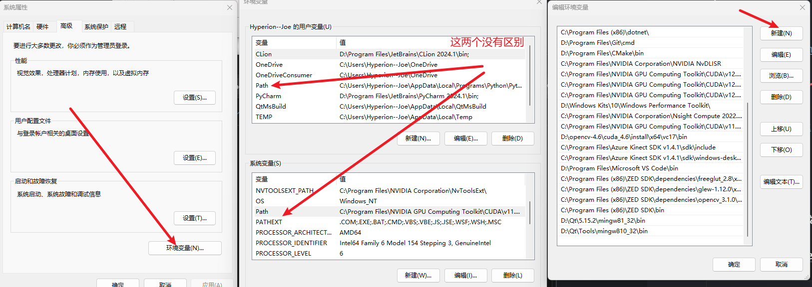
添加到系统环境变量和用户环境变量没有区别，当系统中存在多个用户时可以为用户设置自己的环境。
当Windows系统中存在多个用户时可以单独为用户添加环境变量。
在Visual Studio中设置
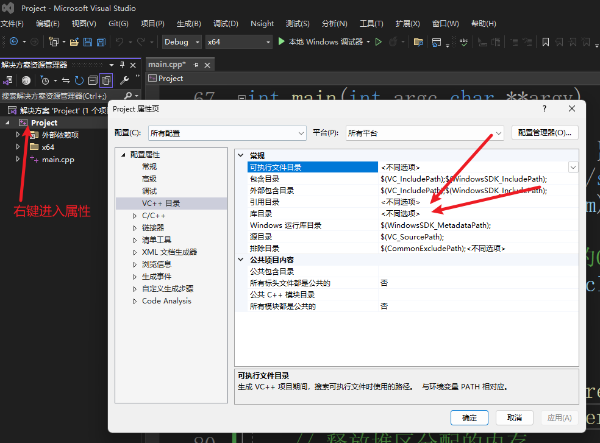
-
在引用目录中添加 include文件夹 xxx\opencv\build\include\opencv2
-
在库目录中添加 lib文件夹 下的对应的库 xxx\opencv\build\x64\vc15\lib （这个地方添加的是一个具体的文件，而不是文件夹）
添加的目标文件取决于自己的项目构建类型
opencv_worldxxx.lib Release版本
opencv_worldxxxd.lib Debug版本
//头文件
#include <opencv2/opencv.hpp>
#include <iostream>
int main() {
// 打开默认摄像头（通常是0）
cv::VideoCapture cap(0);
// 检查摄像头是否打开成功
if (!cap.isOpened()) {
std::cerr << "Error: Could not open camera." << std::endl;
return -1;
}
// 创建一个窗口来显示视频 窗口的大小为自动
cv::namedWindow("Camera", cv::WINDOW_AUTOSIZE);
//图像的数据类型
cv::Mat frame;
while (true) {
// 从摄像头捕获一帧
cap >> frame;
// 检查是否成功捕获
if (frame.empty()) {
std::cerr << "Error: Could not capture frame." << std::endl;
break;
}
// 显示捕获的帧
cv::imshow("Camera", frame);
// 检查用户是否按下了'q'键来退出
if (cv::waitKey(1) >= 0 && cv::waitKey(1) == 'q') {
break;
}
}
// 释放摄像头资源
cap.release();
// 销毁所有窗口
cv::destroyAllWindows();
return 0;
}
(＾－＾) V
手动编译安装
注：OpenCV可以编译为32位、64位。但CUDA只支持64位。在编译带CUDA版本的OpenCV时必须选择64位
注：编译拓展库模块之后OpenCV库全为Release模式，在使用时配置项目设置为Release模式
Windows可以使用MinGW、Visual Studio进行编译。在使用时必须配置为相同的编译器进行使用。
在手动编译时可以添加OpenCV拓展库，拓展库中存在一些新的模块，新模块通常没有稳定的 API，并且没有经过充分测试。模块成熟并获得普及时，它将被移至中央 OpenCV 存储库。
添加拓展库中主要使用的功能为CUDA加速，但是在实际使用时可以添加其他的库来进行使用。所以拓展模块不是必须。
如果需要添加CUDA版本，需要使用visual studio进行编译，使用MinGW无法编译带cuda版本的opencv。 在编译之前需要先安装显卡驱动和CUDA库。
源码下载（自行选择版本）
- Release下
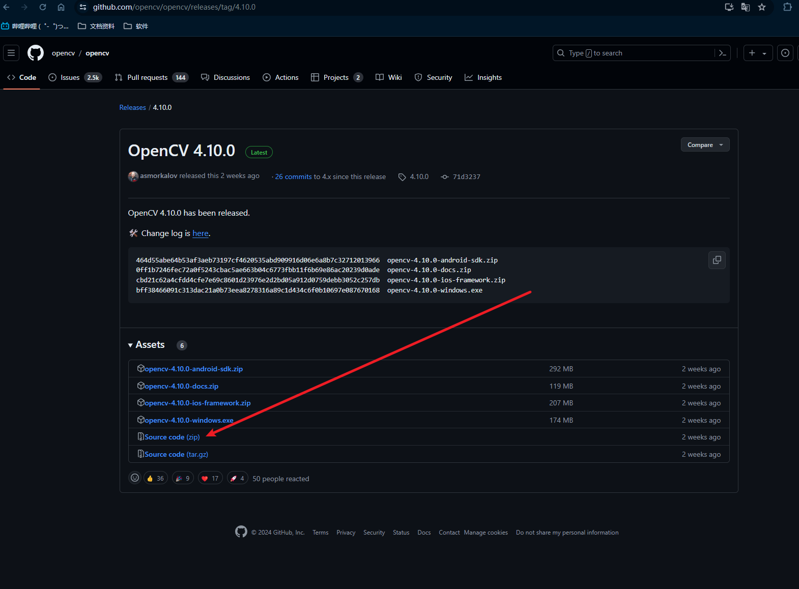
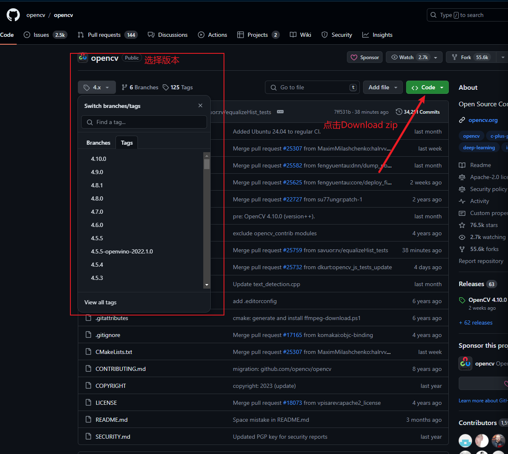
使用MinGW、Visual Studio以及在Linux下进行编译时的选项都一样 只是在开始的时候选择编译器时选择相应的编译器，
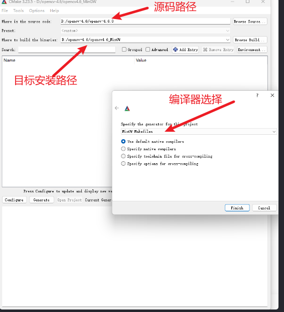
选项：
-BUILD_opencv_world 不勾选
将所有的文件编译成一个包 可能会出现错误，生成多个包后面可以自己配置
-OPENCV_GENERATE_SETUPVARS 不勾选
用于生成一个名为opencv_setupvars.sh的脚本文件。这个脚本文件包含了设置OpenCV库环境变量的命令，可以方便地用于在终端中设置OpenCV库的环境变量。 在编译时会产生warning 环境可以自己进行配置
-OPENCV_ENABLE_NONFREE 勾选
开启一些有版权的算法的支持
-ENABLE_FAST_MATH (自行选择)
用于启用或禁用快速数学优化。当该选项启用时，OpenCV会使用快速数学优化指令（如SSE、AVX等）来加速数学计算，从而提高程序的性能。但是需要注意的是，快速数学优化可能会引入一些精度损失，因此在一些对精度要求较高的应用场景下可能需要谨慎使用。
-搜索 test 全部取消勾选
测试文件 不需要编译
-BUILD_opencv_python3 取消勾选
-BUILD_opencv_python_bindings_generator 取消勾选
与python相关的库 在python下可以直接使用指令来下载对应的python
-BUILD_JAVA 取消勾选
-BUILD_opencv_java_bindings_generator 取消勾选
与JAVA相关的库 同上
-BUILD-opencv_js 取消勾选
-BUILD_opencv_js_bindings_generator 取消勾选
与JavaScript相关的库
可选项-BUILD_opencv_highgui
OpenCV的高级图形用户界面模块。在使用imshow时显示图像像素的位置，以及其他的工具
添加拓展模块
-OPENCV_EXTRA_MODULES_PATH 填写拓展库的路径 下的modules
拓展库的路径
-BUILD_opencv_xfeatures2d 取消勾选（如果可以下载也可以不取消）
-BUILD_opencv_wechat_qrcode 必须取消勾选
-BUILD_opencv_face 取消勾选（可以下载的话可以不取消)
-BUILD_SHARED_LIBS 指定是否要构建共享库（动态链接库）
CUDA加速
注：在编译CUDA加速时需要配置两次
搜索“cuda”，
勾选 BUILD_CUDA_STUBS、OPENCV_DNN_CUDA、WITH_CUDA
第一次点击Configure
勾选 CUDA_FAST_MATH
当BUILD_SHARED_LIBS被设置为ON时，OpenCV将会被编译成为动态库 dll（Windows下）、so（Linux下）
当BUILD_SHARED_LIBS被设置为OFF时OpenCV将会被编译成为静态库 lib(msvc)、a(MinGW)
点击Configure之后查看输出栏是否存在 红色 错误 。如果无错误则点击Generate
- 当编译器为MinGW时
打开 配置时选择的文件夹 使用终端打开
-j21 设置为cpu核数 21为自己的电脑cpu核数 根据自己的设备配置
mingw32-make -j21
#进行编译
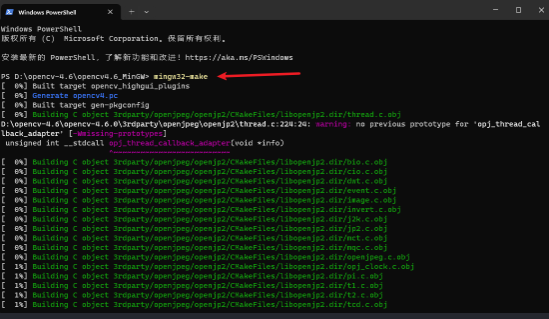
安装
mingw32-make install
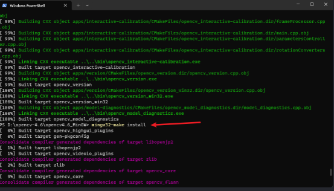
配置时指定的路径 D:\opencv-4.6\opencv4.6_MinGW
最终安装好的文件 在install下
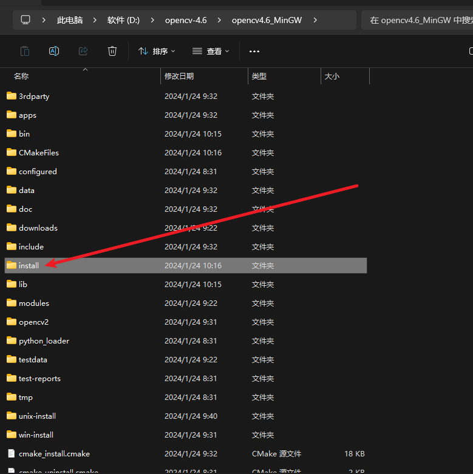
- 当编译器为Visual Studio
打开指定的路径下的 OpenCV.sln
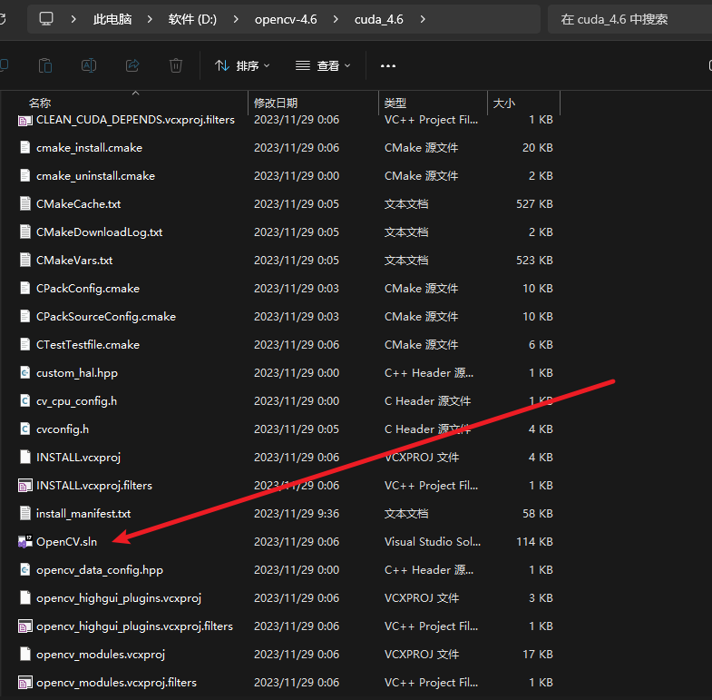
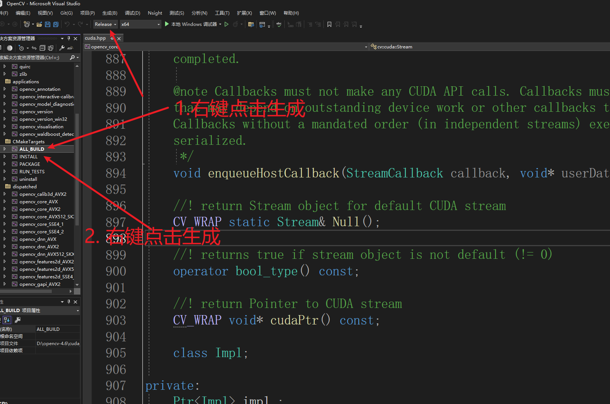
！！！ 如果添加了拓展模块 必须设置为 Release
以下都在CMake Targets 中
- 选择 All_BUILD 右键生成 等待完成
- 选择 INSTALL 右键生成
最终生成在目录下 install 内
Ubuntu下安装
可以使用cmake-qt-gui进行配置，也可以使用cmake参数进行配置
需要的工具
sudo apt-get install -y gcc g++ cmake make cmake-qt-gui
依赖库
sudo apt-get install -y build-essential libgtk2.0-dev libgtk-3-dev libavcodec-dev libavformat-dev libjpeg-dev libswscale-dev libtiff5-dev libeigen3-dev
sudo apt-get install -y libjpeg-dev libpng-dev libtiff-dev libavcodec-dev libavformat-dev libswscale-dev libv4l-dev libxvidcore-dev libx264-dev libgtk-3-dev libatlas-base-dev gfortran libgflags-dev libgoogle-glog-dev
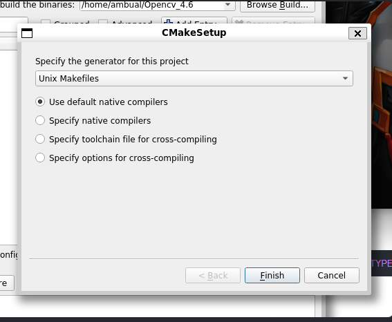
配置目录 编译器选择默认
需要添加参数
-OPENCV_GENERATE_PKGCONFIG
生成一个pkg-config的路径使得pkgconfig能够自动传递库路径给g++进行编译
如果需要配置CUDA，需要先在系统中安装NVIDIA驱动以及CUDA库
其他配置同上
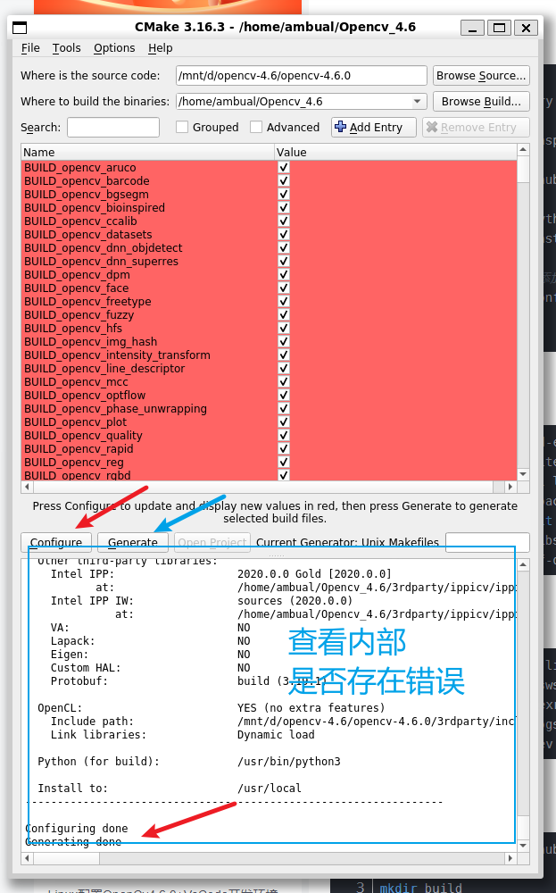
- 配置完成 点击Configure 等待完成
- Configure 完成之后查看消息框中是否存在错误，无错误之后点击Generate
最终输出为
Configuring done
Generating done
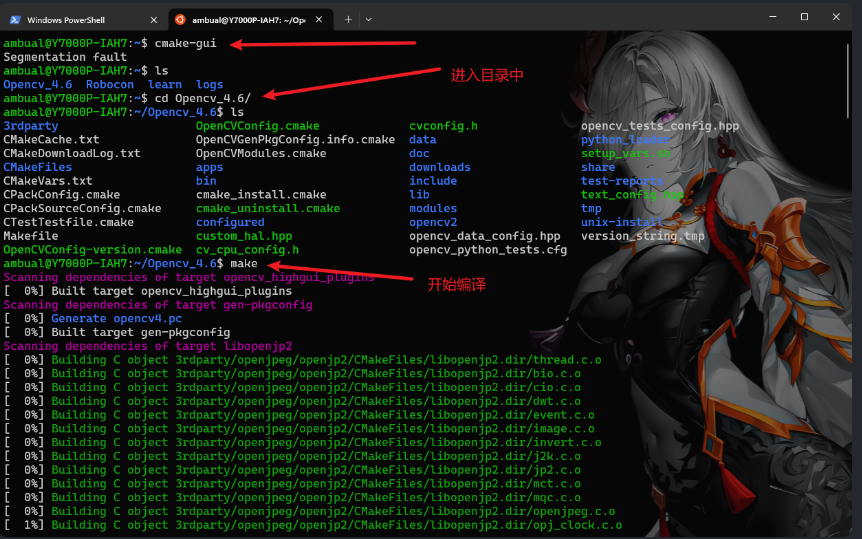
打开设置的文件夹 终端中打开
开始编译
-j21 设置为cpu核数 21为自己的电脑cpu核数 根据自己的设备配置
make -j21
安装
sudo make install
配置pkg-config环境
opencv4.pc文件路径：/usr/local/lib/pkgconfig/opencv4.pc
======
使用 sudo find / -iname opencv4.pc 查找
将路径加入到PKG_CONFIG_PATH（用vim或gedit打开）：
sudo vim /etc/profile.d/pkgconfig.sh
或
sudo gedit /etc/profile.d/pkgconfig.sh
添加：
export PKG_CONFIG_PATH=/usr/local/lib/pkgconfig:$PKG_CONFIG_PATH
=======================
# 激活
source /etc/profile
========================
验证：
pkg-config --libs opencv4
========================
配置动态库环境
sudo vim /etc/ld.so.conf.d/opencv4.conf
或
sudo gedit /etc/ld.so.conf.d/opencv4.conf
添加：
/usr/local/lib
===================
使路径生效：
sudo ldconfig
使用参数进行配置
说明：使用参数配置，其实就是直接在终端中配置opencv，参数其实就是在桌面版cmake中看见的参数，在每一个参数钱加 -D，选项中勾选为NO，取消勾选为OFF。
===
下面给的参数为添加了拓展库和CUDA加速的版本。可以根据自己的需求自行添加或者修改参数
===
cmake \
-D OPENCV_GENERATE_PKGCONFIG=ON \
-D BUILD_CUDA_STUBS=ON \
-D OPENCV_DNN_CUDA=ON \
-D WITH_CUDA=ON \
-D OPENCV_ENABLE_NONFREE=ON \
-D BUILD_PERF_TESTS=OFF \
-D BUILD_TESTS=OFF \
-D BUILD_opencv_python_tests=OFF \
-D INSTALL_TESTS=OFF \
-D OPENCV_EXTRA_MODULES_PATH=拓展库的路径 \
-D CUDA_FAST_MATH=ON \
-D BUILD_opencv_python3=OFF \
-D BUILD_opencv_python_bindings_generator=OFF \
-D BUILD_JAVA=OFF \
-D BUILD_opencv_java_bindings_generator=OFF \
-D BUILD_opencv_js=OFF \
-D BUILD_opencv_js_bindings_generator=OFF \
-D BUILD_opencv_xfeatures2d=OFF \
-D BUILD_opencv_wechat_qrcode=OFF \
-D BUILD_opencv_face=OFF \
/home/titr/opencv(安装的路径)
等待完成之后进行安装的路径
编译--》安装--》配置pkg-config环境--》配置动态库环境
测试
新建文件夹
mkdir test
进入
cd test
编写CMakeLists.txt文件
vim CMakeLists.txt
或
gedit CMakeLists.txt
===================
cmake_minimum_required(VERSION 3.10)
# 项目名称
project(test)
# 设置C++标准
set(CMAKE_CXX_STANDARD 11)
set(CMAKE_CXX_STANDARD_REQUIRED True)
# 查找OpenCV包
find_package(OpenCV REQUIRED)
# 添加可执行文件
add_executable(test main.cpp)
# 链接OpenCV库
target_link_libraries(test ${OpenCV_LIBS})
===================
保存+退出
main.cpp
vim main.cpp
或
gedit main.cpp
================
//头文件
#include <opencv2/opencv.hpp>
#include <iostream>
int main() {
// 打开默认摄像头（通常是0）
cv::VideoCapture cap(0);
// 检查摄像头是否打开成功
if (!cap.isOpened()) {
std::cerr << "Error: Could not open camera." << std::endl;
return -1;
}
// 创建一个窗口来显示视频 窗口的大小为自动
cv::namedWindow("Camera", cv::WINDOW_AUTOSIZE);
//图像的数据类型
cv::Mat frame;
while (true) {
// 从摄像头捕获一帧
cap >> frame;
// 检查是否成功捕获
if (frame.empty()) {
std::cerr << "Error: Could not capture frame." << std::endl;
break;
}
// 显示捕获的帧
cv::imshow("Camera", frame);
// 检查用户是否按下了'q'键来退出
if (cv::waitKey(1) >= 0 && cv::waitKey(1) == 'q') {
break;
}
}
// 释放摄像头资源
cap.release();
// 销毁所有窗口
cv::destroyAllWindows();
return 0;
}
进入项目目录
创建 build 目录 并进入
mkdir build
cd build
=====================
构建项目
cmake ..
======================
编译项目
make 可以添加cpu核数 make -j21
======================
运行
./test
Python安装OpenCV
在Python中可以直接使用pip指令进行下载， 在Windows和Linux下的用法都一样。
注：Python版本中可能存在差异，我们可以安装Anaconda来进行Python的管理。使用Anaconda可以在我们的电脑中同时安装多个不同版本的Python。
——》 Anaconda的安装配置和使用（还没写）
- 使用pip命令查看所有的opencv版本
pip search opencv-python
- 安装opencv的python版本
pip install opencv-python
注：直接使用上方的pip安装命令会直接下载到opencv的最新版本。
- 安装特定版本的opencv
pip install opencv-python==<版本号>
- 下载时添加镜像源
可以直接修改python全部的镜像源，但那样的话有些软件包可能存在问题。所以我们只需要在下载时配置软件源即可
添加镜像源的方式不止下载opencv时可以使用，在下载其他的软件包时可以使用
pip install opencv-python -i https://镜像源地址
（ o゜▽゜) o☆[ B I N G O ! ]
无法下载文件
在我们进行cmake时，由于网络原因无法下载一些文件，我们可以找一些方法来下载这些文件
-
进行配置网络环境：网络环境配置
-
修改cmake配置文件
修改对应的文件下的下载地址
添加镜像下载地址
https://raw.githubusercontent.com/opencv/ xxxxxxxx
为
https://raw.githubusercontent.com/https://raw.githubusercontent.com/opencv/ xxxxxxxx
- IPPICV 下载失败
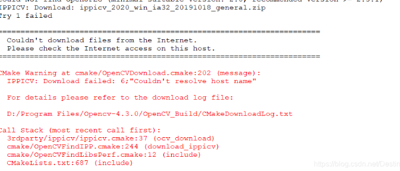
打开opencv源码下/source/3rdparty/ippicv
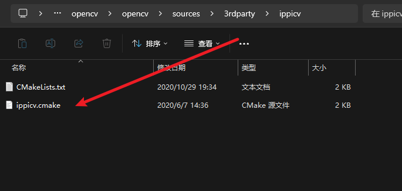
- ffmpeg下载失败
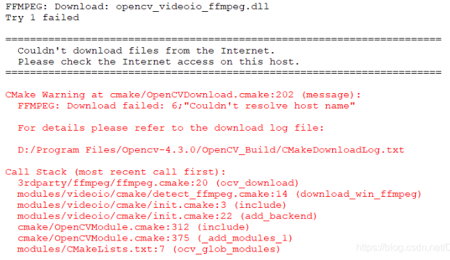
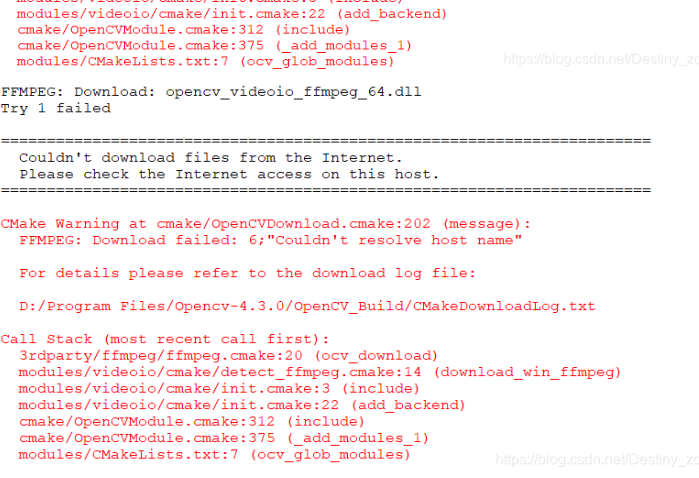
opencv源码目录\sources\3rdparty\ffmpeg目录
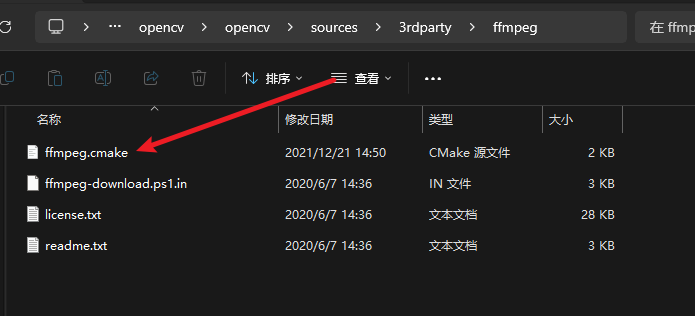
拓展库
- boostdesc_bgm.i相关文件下载失败
opencv_contrib拓展库\modules\xfeatures2d\cmake
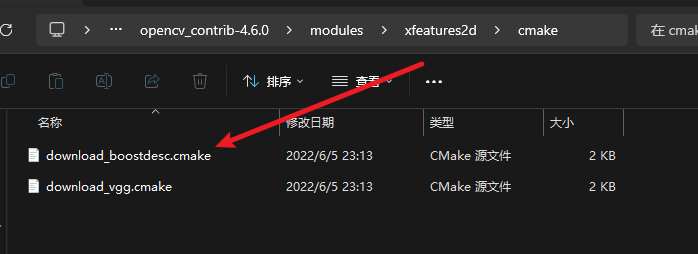
- vgg_generated_120.i相关文件下载失败
opencv_contrib拓展库\modules\xfeatures2d\cmake
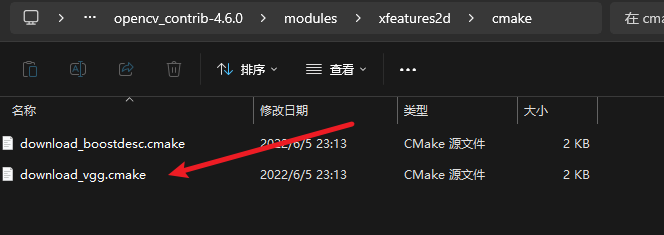
- face_landmark_model.dat下载失败
opencv_contrib拓展库\modules\face\CMakeLists.txt
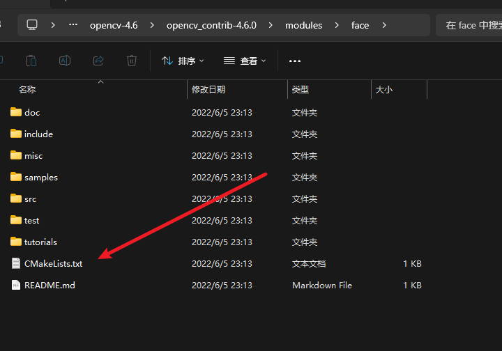